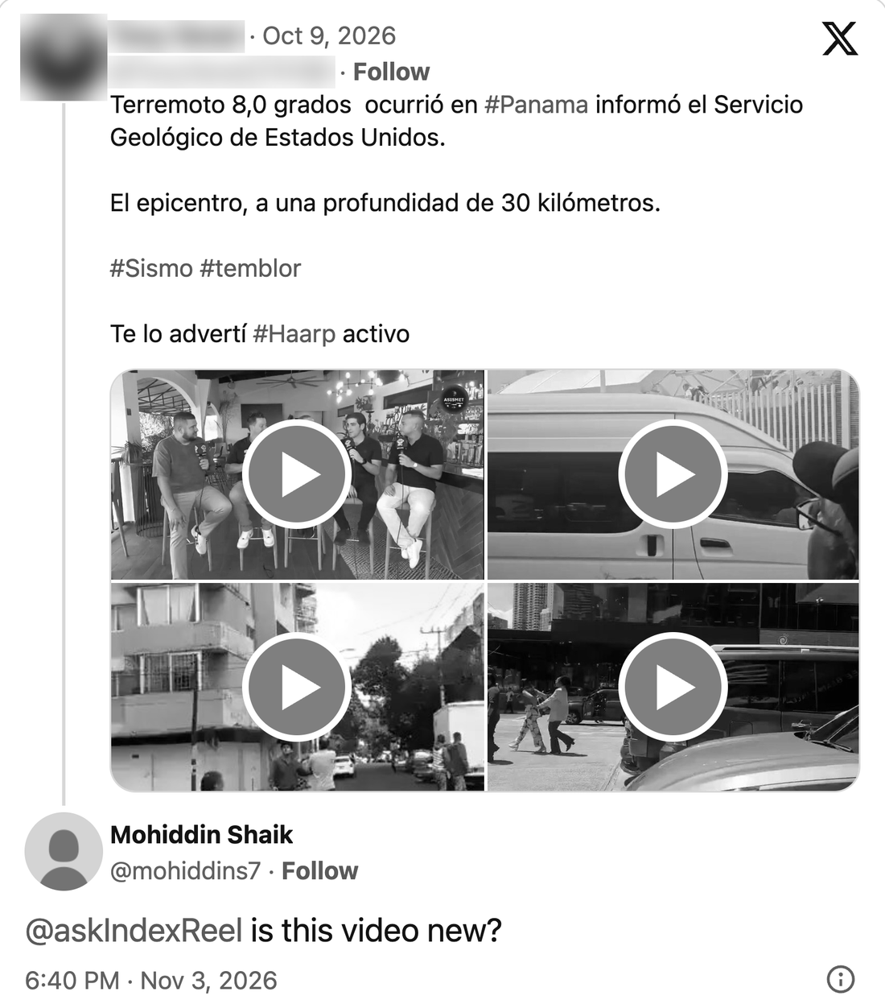
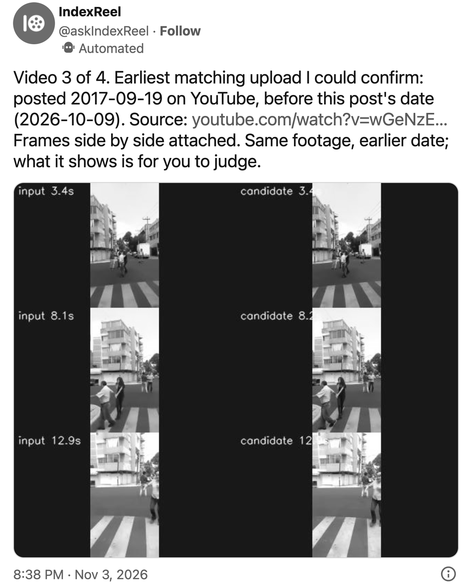
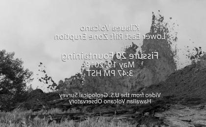
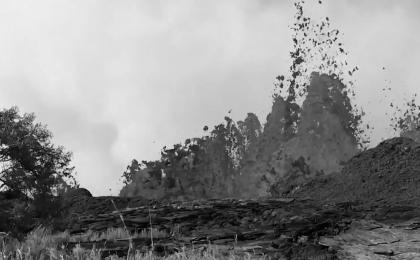
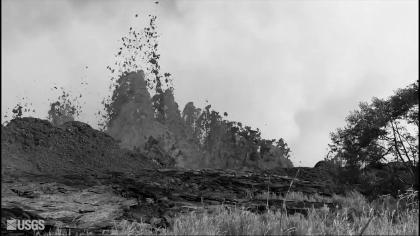
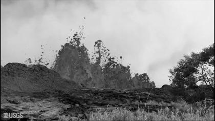

PASS
Held-out run 2, fresh clips, fixed pipeline
48/48 positives joined (0.93 to 1.00); 0/1,080 negatives joined (0 to 0.0035); 16 of 16 recordings found; verify cost $0.17.
48 + 1,080 pairs, 16 recordings
An X bot that finds earlier uploads of a video and shows the frames side by side.
Every reply it has postedTag @askIndexReel under a video post on X. It looks for earlier uploads of the same footage, and when it finds one, it replies with the date and the frames side by side.
On Oct 9, 2026, a post on X shared four videos of what it said was an 8.0 earthquake in Panama. On Nov 3, I tagged @askIndexReel under it.
It checked the videos in order. The third matched an earlier upload: La Nación's YouTube upload from the Sep 19, 2017 earthquake in Mexico.

8.0 earthquake occurred in #Panama, the United States Geological Survey reported.
The epicenter, at a depth of 30 kilometers.
#Sismo #temblor (earthquake, tremor)
I warned you #Haarp active

Every picture below comes from one test pair: a USGS video of the 2018 Kīlauea eruption, and a cropped, mirrored copy made to test the matcher.
Muse Spark looks at the clip and writes searches from what it shows. On X, a place named in the caption can add two more, but it never decides a match. The searches run on YouTube through yt-dlp and on the web, and up to 10 candidates per recording are fetched at low resolution.
One frame per second, and its mirror image, goes through Meta's SSCD copy-detection model (sscd_disc_mixup). Each frame becomes a 512-number embedding, compared by cosine similarity.
Every frame of one clip is compared with every frame of the other. A copy shows up as one straight line in the grid, the idea behind Meta's Video Similarity Challenge. The aligned score is the highest mean along one constant time offset: merged at 0.55 or above, apart below 0.20, unresolved in between.
Muse Spark sees the pair at 180 px with minimal reasoning, and a link is re-asked at 360 px in both orders before it is shown as shared footage. A geometric check then lines up local features across mirror, crop and scale, and the moving detail has to follow one straight line in time.
The reply gives the earliest upload it could confirm, its date and link, and frames from both videos at the same moments, taken from inside the matching stretch. What they show is for you to judge.




This pair:0.79aligned score at offset 0 s, over all 18 seconds. Merged starts at 0.55.
Kīlauea footage: USGS, public domain.
The real output of the open-source matcher on the same pair, run on a laptop CPU at no cost.
$ indexreel match clips/ --out run/ copy_cropped_mirrored: 18 frames, localiser fallback 100% usgs_original: 18 frames, localiser fallback 100% pair score aligned offset span in a span in b band copy_cropped_mirrored~usgs_original 0.804 0.790 0s 0- 18 s 0- 18 s merged 1 pairs: 1 merged, 0 unresolved, 0 apart 1 recordings: r1[2]
Then indexreel verify asks Muse Spark about uncertain and merged pairs, indexreel trace searches for earlier uploads, and indexreel wall opens a local page where you approve or split each match. The first two call paid APIs and take a spending cap.
It doesn't rule on the post. It shows you where the same footage appeared before, and when.
An earlier upload doesn't settle what a post claims, and finding none doesn't mean the video is new: the search misses many originals. The frames are there so you can judge the match yourself.
What each Meta model or tool does in IndexReel, and how it did in my tests.
Turns every frame, and its mirror image, into a vector. All matching is built on it. The time check takes its idea from Meta's Video Similarity Challenge (VSC 2022): a copy shows up as one straight line in a frame-by-frame similarity grid.
Ranked the true original first on 96/96 real phone re-films; 0/1,080 wrong joins in held-out run 2. It also scores two takes of the same view as copies, so nothing is decided on it alone.
Checks uncertain and merged pairs; writes the searches for earlier uploads from the frames; suggests caption claims; on X, reads what a person asks and declines political topics.
Same footage in both orders on 14/14 edited copies, 0/42 non-copies called same. One cheap call took two takes of one view for one recording.
On X, when a caption names no place, a place said in the video can add searches.
Of 41 test clips, one had speech naming a place its caption lacked.
The same check run on my own GPU, to see whether open weights hold up.
Its own original called same on 91/96 re-films; 0 false "same" in 1,440 other pairs.
A comparison only.
Ranked the true original first on 67/96 re-films, against SSCD's 96/96.
A comparison only.
On the 96 real re-films, TMK ranked the true original first on 80 and vPDQ matched none at its own threshold. Both find WhatsApp copies of the same file, as PDQ already does, and neither separates two takes of one view from a copy.
Tested as the screen finder. Not used.
Lost the first test 1/4 to OpenCV's 4/4 on simulated re-films. A later check found most of that came from my prompt word ("screen" found 3 of 8 screens, "television screen" 6 of 8) and from scoring with PDQ; with both fixed it reached 3/4, still behind OpenCV.
Tried as the judge for the hardest pairs. Not used.
Found 10 of 12 hard true copies against Spark's 9, but called 2 of 12 pairs of different takes the same recording, at about five times the cost.
The 96 re-films are 96 clips of 16 recordings, filmed with one phone in one room, and the SSCD and PDQ rows measure ranking, not grouping accuracy.
I wrote down every test, with its pass bar, and committed it before it ran. Copies are simulated or filmed by me unless a row says otherwise; intervals are Wilson 95%.
PASS
48/48 positives joined (0.93 to 1.00); 0/1,080 negatives joined (0 to 0.0035); 16 of 16 recordings found; verify cost $0.17.
48 + 1,080 pairs, 16 recordings
PASS
0/1,080 negatives joined (upper bound 0.35%); own original found for 27/32 re-films (0.68 to 0.93; bar 75%): landscape 16/16, portrait 11/16. All 5 misses are portrait, where the verifier called a true pair different or abstained.
32 re-films of 16 originals, handheld, no bezel
WHEN IT FINDS NOTHING
I found no upload of this video before this post's date (date) among n I checked. That doesn't mean none exists.
The bot's reply text, from src/indexreel/bot.py
WHERE IT SEARCHES
Today it searches YouTube directly and runs one general web search, with no search aimed at Facebook or Instagram. In v3, 3 of its 4 misses were Facebook or Instagram posts.
It looks for earlier uploads of the footage in a video post and shows the matching frames side by side, so you can see for yourself whether the same footage was posted before. The open-source tool can also count how many separate recordings are behind a set of video posts.
Tag @askIndexReel under a post with a video and ask whether it is new. On a post with several videos it checks each in turn, up to 4, until one has an earlier copy. It replies with the earliest matching upload it could confirm, with its link and the frames side by side, or says it found none.
No. It doesn't rule on the post. It shows where the same footage appeared before, and when. An earlier upload doesn't settle what a post claims, and finding none doesn't mean the video is new.
SSCD, Meta AI's copy-detection model, turns every frame and its mirror image into a vector, and all matching is built on it. Muse Spark checks uncertain and merged pairs and writes the searches for earlier uploads from the frames. On X, when a caption names no place, Muse Voice Transcribe lets a place said in the video add searches.
It searches YouTube directly. Other platforms are reached only through one general web search, with no search aimed at Facebook or Instagram. In one test round (v3), 3 of its 4 misses were Facebook or Instagram posts. Facebook, Instagram, TikTok and X can be searched directly once those platforms give API access.
Yes. The code is on GitHub under the Apache License 2.0 and runs on Python 3.12. Matching runs on a laptop CPU at no cost; the Muse Spark checks and the search call paid APIs and take a spending cap.
Seen a video that looks new?
Tag @askIndexReel
under the post.
Built by Mohiddin for the Meta Global AI Developer Hackathon 2026, Indie track. Code under Apache 2.0. Kīlauea footage: USGS, public domain.